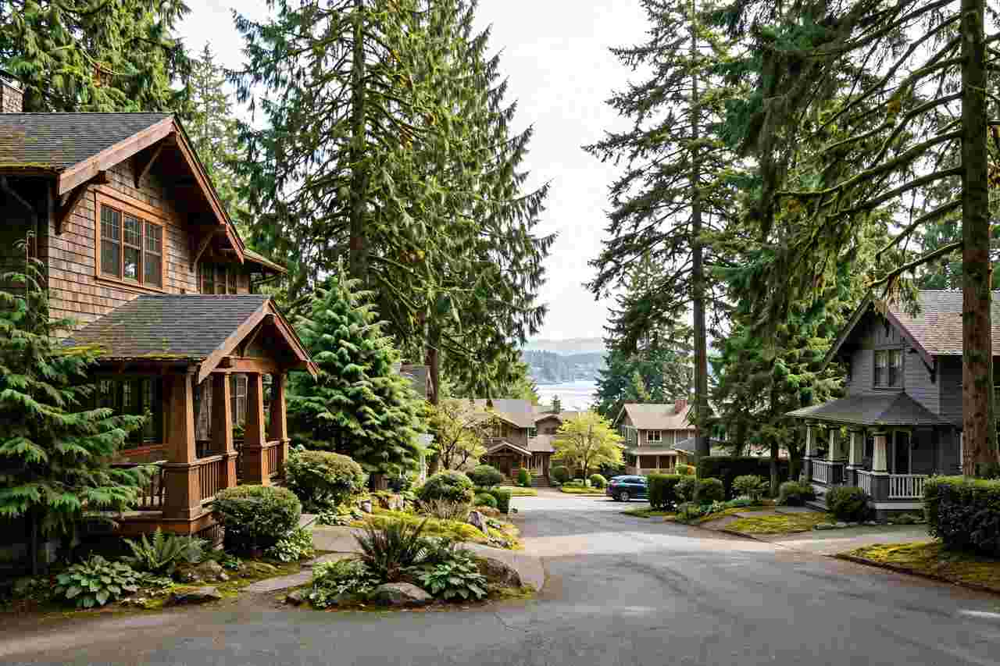

Rodent Control · Entiat, WA
Same-Day Rodent Control in Entiat, WA
Rats in the attic or mice in the kitchen in Entiat? Murvo provides same-day rodent control with local crews who inspect first, remove the animals already inside, and seal the entry points they used. Every job is quoted flat-rate in writing before work begins and backed by a written guarantee, covering homes and businesses across Chelan County. Service covers 1 ZIP codes across Chelan County, including 98822, with same-day appointments where schedules allow.
24/7Availability
1ZIP codes covered
Same-dayResponse
Licensed · Upfront options · Written guarantees · Fully insured
Entiat at a glance
Local Rodent Control for Entiat, WA.
Chelan County
Countycentral Washington
RegionYakima · 77 mi
Nearest metro133 miles east of Olympia
From Olympia1
ZIP codes covered Service by service in Entiat
Rodent Control Services Available in Entiat
Rodent-only specialists serving Entiat and Chelan County. Every service below is explained in local terms - the species involved, the entry points that matter in Craftsman and older single-family homes with crawlspaces, hillside homes, and waterfront properties, and the seasonal timing that decides whether a fix lasts.
- 01Rodent Control↗
- 02Rodent Inspection↗
- 03Rodent Removal↗
- 04Rodent Exclusion↗
- 05Rodent Proofing↗
- 06Rat Control↗
- 07Mice Control↗
- 08Mouse Removal↗
- 09Rat Removal↗
- 10Rodent Trapping↗
- 11Rodent Baiting↗
- 12Rodenticide Application↗
- 13Attic Rodent Removal↗
- 14Crawl Space Rodent Removal↗
- 15Wall Rodent Removal↗
- 16Kitchen Rodent Control↗
- 17Garage Rodent Control↗
- 18Commercial Rodent Control↗
- 19Residential Rodent Control↗
- 20Emergency Rodent Removal↗
- 21Same-Day Rodent Control↗
- 22Rodent Damage Repair↗
- 23Rodent Waste Cleanup↗
- 24Rodent Disinfection↗
- 25Rodent Odor Removal↗
- 26Dead Rodent Removal↗
- 27Rodent Dropping Cleanup↗
- 28Rodent Exclusion for Roofs↗
- 29Rodent Exclusion for Vents↗
- 30Rodent Exclusion for Chimneys↗
Rodent Control in Entiat
Rodent Control in Entiat
A single mouse sighting in an Entiat kitchen rarely means a single mouse. Rodents breed fast, contaminate food areas, and gnaw wiring long before the damage is obvious. Murvo responds with same-day appointments where available, a background-checked local crew, and a coordinated program of trapping, exclusion, cleanup guidance, and monitoring that keeps working after the first visit ends.
In Entiat, rodent control is not a generic spray-and-go service. Rodents exploit crawlspace vents and access doors, foundation gaps, sewer laterals, and gaps under doors and around utility lines in Craftsman and older single-family homes with crawlspaces, hillside homes, and waterfront properties, and a fix that ignores those routes does not last. Murvo's Entiat team inspects first, shows you the evidence - droppings, gnaw marks, entry gaps - and then lays out the work with a flat-rate written quote. We serve all of Chelan County from Entiat, including Waterville, Chelan Falls, and every job is covered by our written workmanship guarantee. In Entiat, rodent control calls most often involve Craftsman and older single-family homes with crawlspaces, hillside homes, and waterfront properties, where crawlspace vents and access doors, foundation gaps, sewer laterals, and gaps under doors and around utility lines decide whether the fix holds.
Consider how a visit unfolds. Cleanup guidance covers contaminated areas safely, and exclusion work closes the route permanently. Throughout, photographs and written notes keep you informed, so progress is something you can see and verify rather than something you are asked to trust. The technician walks the exterior before touching anything indoors, noting gaps, rub marks, and food sources. Inside, attic and crawl-space evidence shapes the trapping plan, which is adjusted visit by visit as numbers change. Photographs taken at the start make those later comparisons honest, because memory alone tends to blur the details.
Getting started takes one conversation, day or night, because our lines stay open 24/7. Work proceeds only after your approval, in stages you can follow, and a final walkthrough reviews every seal and every monitoring result before sign-off. We book a window that suits your household, confirm access needs in advance, and arrive prepared. Questions after sign-off are welcome at any hour, and the same written record helps any technician pick up your case immediately.
In most of Entiat, we can offer a same-day appointment for rodent control, and our lines are open 24/7 for urgent cases like scratching in the walls or a rodent in a living area. Your technician inspects first, explains the plan, and quotes a flat rate in writing before any work begins, so help starts fast without surprises. That is also why Murvo pairs removal with exclusion in Entiat - treating the animal without closing crawlspace vents and access doors, foundation gaps, sewer laterals, and gaps under doors and around utility lines rarely lasts.
The honest answer is that it depends on species, activity level, and how much sealing your home needs, which is why Murvo inspects first and then gives you a flat-rate quote in writing. For national context only, Angi's 2026 data averages rat and mouse removal and control at $396, typically $189 to $655; that is not a Murvo price, and your written quote is the figure you pay.
Rodent Inspection in Entiat
Rodent Inspection in Entiat
Most Entiat inspections start with uncertainty: a noise, a smell, a few droppings that might be old. Murvo turns that uncertainty into a written record. A rodent inspection checks attic, crawl space, roofline, and foundation, photographs the evidence, and ends with a flat-rate written quote for anything worth fixing.
Homeowners in Entiat call Murvo for rodent inspection because the problem here is specific: Norway rat (Rattus norvegicus) pressure around Craftsman and older single-family homes with crawlspaces, hillside homes, and waterfront properties, tight access at crawlspace vents and access doors, foundation gaps, sewer laterals, and gaps under doors and around utility lines, and activity that follows the local season. Our Chelan County crews diagnose the real source before recommending work, explain the options in plain language, and quote one flat rate in writing. Across Entiat - including Waterville, Chelan Falls - every visit is backed by licensed, insured technicians and our written workmanship guarantee. Around Sunnyslope, Manson, Chelan, the pattern is similar: House mouse (Mus musculus) finds crawlspace vents and access doors, foundation gaps, sewer laterals, and gaps under doors and around utility lines first, and lasting rodent inspection has to close those routes.
The inspection starts outside, where we check the foundation, siding, pipe penetrations, garage doors, and roof junctions, because mice can squeeze through a gap the width of a pencil. We also note where Craftsman and older single-family homes with crawlspaces, hillside homes, and waterfront properties create hidden routes through crawlspace vents and access doors, foundation gaps, sewer laterals, and gaps under doors and around utility lines. Inside, we examine the attic, crawl space, insulation, stored items, and food areas for droppings, nests, rub marks, and gnaw damage. Every finding is photographed and explained, and recommendations are marked urgent or preventive so you can stage the work sensibly.
Your part is simple: point out noises, droppings, and any past problems. Before leaving, you walk through the evidence together, discuss priorities, and decide what happens next, with no obligation attached. Ours is everything else. A background-checked technician arrives on time, protects access areas, and inspects inside and out against a set checklist. If you decide to proceed, those findings become the working plan, so no second survey is needed before approved repairs begin.
You do not have to wait days for answers in Entiat. Same-day rodent inspection appointments are available in most areas, urgent calls are taken 24/7, and most home inspections take under an hour. You finish the visit with photos, written findings, and flat-rate pricing for anything we recommend. In Chelan County, most cases involve the Norway rat (Rattus norvegicus) and the House mouse (Mus musculus), so the inspection focuses on their routes first.
Your exact rodent inspection price is confirmed before we visit, and any follow-up work is quoted as a flat rate in writing after the inspection — no hourly billing. For context, Angi's 2026 data puts a professional rodent inspection nationally at $100 to $200, often credited toward the job if you proceed.
Rodent Removal in Entiat
Rodent Removal in Entiat
In Craftsman and older single-family homes with crawlspaces, hillside homes, and waterfront properties, removal fails when it ignores how rodents actually live: close to food, water, and undisturbed cover near crawlspace vents and access doors, foundation gaps, sewer laterals, and gaps under doors and around utility lines. Our rodent removal in Chelan County starts by mapping that daily pattern, then removes animals room by room, including attics and garages, until monitoring, not optimism, says the home is clear.
Homeowners in Entiat call Murvo for rodent removal because the problem here is specific: Norway rat (Rattus norvegicus) pressure around Craftsman and older single-family homes with crawlspaces, hillside homes, and waterfront properties, tight access at crawlspace vents and access doors, foundation gaps, sewer laterals, and gaps under doors and around utility lines, and activity that follows the local season. Our Chelan County crews diagnose the real source before recommending work, explain the options in plain language, and quote one flat rate in writing. Across Entiat - including Waterville, Chelan Falls - every visit is backed by licensed, insured technicians and our written workmanship guarantee. Coverage for rodent removal spans 1 ZIP codes in Chelan County, including 98822.
Removal starts with an assessment of species, numbers, and access routes across attics, wall voids, garages, and kitchens. Removal is followed immediately by entry-point exclusion, because new rodents will replace removed ones through any gap left open, and disinfection is arranged after heavy activity. Once you approve the written quote, technicians set traps along proven runways, check them on schedule, and remove animals promptly and hygienically. Catch records show progress clearly instead of relying on guesswork. Photos document each stage for you.
Once you book rodent removal in Entiat, we agree a time window and your technician arrives with traps, protective equipment, and a clear plan. Progress is photographed and shared with you throughout the program. The first visit confirms activity and sets traps; return visits clear and reset them on schedule. When catches reach zero, we walk through the results, discuss sealing, and confirm your written guarantee before closing the job. Nothing is left unexplained.
For active infestations in Entiat, rodent removal can usually start the same day you call, and our team answers 24/7 when a rodent is loose in a living area. The first visit confirms activity and sets traps straight away; return visits then clear and reset them until monitoring shows the property is completely clear. Murvo's Entiat crews explain the finding either way, and the flat-rate quote leaves the decision with you.
Cost depends on the species, how many animals are active, and how much sealing the home needs afterwards, so Murvo inspects first and quotes one flat rate in writing. For national context only, Angi's 2026 data averages rat and mouse removal at $396, typically $189 to $655. That benchmark is not a Murvo price; your written quote is the exact figure.
Rodent Exclusion in Entiat
Rodent Exclusion in Entiat
Rats can pass through a hole the size of a quarter, and mice through one far smaller, which is why Craftsman and older single-family homes with crawlspaces, hillside homes, and waterfront properties in Entiat hide so many working entry points around crawlspace vents and access doors, foundation gaps, sewer laterals, and gaps under doors and around utility lines. Our technicians inspect soffits, eaves, pipe entries, foundation cracks, and door sweeps in detail, then prioritize the openings that matter most for Norway rat (Rattus norvegicus) and House mouse (Mus musculus) locally.
When you need rodent exclusion in Entiat, the job starts with what is actually happening in your part of Chelan County. Murvo crews work Entiat every week, so they know how Norway rat (Rattus norvegicus) and House mouse (Mus musculus) behave around Craftsman and older single-family homes with crawlspaces, hillside homes, and waterfront properties here - and where they get in: crawlspace vents and access doors, foundation gaps, sewer laterals, and gaps under doors and around utility lines. We arrive equipped for the full job, confirm the flat rate in writing before work begins, and cover the whole Entiat area, including Waterville, Chelan Falls. No call-center runaround and no open-ended hourly billing - just a local crew, a clear plan, and a written quote you approve first. The Entiat crews who handle rodent exclusion also handle the follow-through - proofing, cleanup, and monitoring - so one visit can close the whole problem.
Before any sealing, active rodents are cleared with trapping so nothing is trapped inside the structure. Because exclusion removes the route in rather than relying on chemicals, it reduces the need for rodenticides and supports pet-safe, no-poison control. A final walkthrough shows you every protected opening, and monitoring checks confirm no new activity appears at sealed points. We then work opening by opening around crawlspace vents and access doors, foundation gaps, sewer laterals, and gaps under doors and around utility lines, rooflines, and utility penetrations, photographing each finished seal. Every seal is listed on your written guarantee.
The visit starts with a check that no animals remain inside, using trapping and monitoring where needed. Once clear, your background-checked crew seals the agreed openings with chew-resistant materials, working cleanly around your home. Before leaving, we show you each finished seal, explain how it was protected, and confirm the guarantee paperwork. A later re-check confirms the seals are holding and activity has stopped. You approve the finished work before we close the job.
Rodent exclusion in Entiat usually starts with a survey visit we can often schedule the same day you call. Sealing itself is booked as soon as any active animals are cleared, because nothing is sealed inside. Most homes are fully sealed within days, not weeks, and urgent entry points near wiring or food areas are prioritized first. In Chelan County, most cases involve the Norway rat (Rattus norvegicus) and the House mouse (Mus musculus), so the inspection focuses on their routes first.
After the survey of your Entiat home, every opening that needs sealing is listed and priced as one flat-rate written quote, so you pay only for the work your property needs. For national context, Angi's 2026 data puts basic exclusion at $200 to $600 depending on access and the number of openings; that benchmark is not a Murvo price.
Rodent Proofing in Entiat
Rodent Proofing in Entiat
As colder weather approaches Chelan County, rodents actively hunt for warm indoor shelter, and unsealed homes are found fast. A Murvo rodent proofing survey checks the roofline, vents, utility entries, and doors before that rush begins. Because proofing prevents infestations instead of reacting to them, it reduces reliance on baits and is backed by our written workmanship guarantee.
Homeowners in Entiat call Murvo for rodent proofing because the problem here is specific: Norway rat (Rattus norvegicus) pressure around Craftsman and older single-family homes with crawlspaces, hillside homes, and waterfront properties, tight access at crawlspace vents and access doors, foundation gaps, sewer laterals, and gaps under doors and around utility lines, and activity that follows the local season. Our Chelan County crews diagnose the real source before recommending work, explain the options in plain language, and quote one flat rate in writing. Across Entiat - including Waterville, Chelan Falls - every visit is backed by licensed, insured technicians and our written workmanship guarantee. Homes near Sunnyslope tend to show activity first in Entiat, which is why inspections start with crawlspace vents and access doors, foundation gaps, sewer laterals, and gaps under doors and around utility lines.
Where proofing overlaps with structural exclusion, we use the same chew-resistant materials: copper mesh, hardware cloth, metal flashing, and durable sealants matched to each opening. Around kitchens, we coordinate sealing behind units and along pipe runs; in garages, we tackle stored-food and clutter harborage directly. The written plan distinguishes homeowner tasks from professional work, and seasonal re-checks after completion catch new gaps early, before they can turn into another indoor infestation for your household. That keeps protection current year after year.
After booking, we confirm your appointment and any access needs, such as gates or attic hatches. On the day, your background-checked technician completes the survey and agreed proofing work in one visit where possible. Before leaving, you walk the finished sealing together, receive care and storage advice, and confirm the guarantee. Later re-checks verify sweeps, screens, and seals are still holding. Nothing is added to your bill without approval first.
Rodent proofing is preventive, so there is rarely a rush, but surveys in Entiat can often be arranged the same day you call, and always within a few days. Most proofing work is completed in a single visit once you approve the plan, and booking before colder weather gives your home protection ahead of the seasonal rush indoors. Murvo's Entiat crews explain the finding either way, and the flat-rate quote leaves the decision with you.
We survey your Entiat property first, separate the quick wins you can handle yourself from the specialist sealing, and quote the professional work as one flat rate in writing so spending can be staged. Angi's 2026 national context puts exclusion, the core of proofing, at $200 to $600 for basic work — a benchmark only, not a Murvo price.
Rat Control in Entiat
Rat Control in Entiat
Rat problems escalate quietly across Chelan County: gnawed wiring, contaminated insulation, and droppings spreading through storage areas before anyone sees an animal. Murvo answers with same-day appointments where available and a 24/7 line for urgent cases. Every visit is documented, trapped rats are removed hygienically, and the program finishes with exclusion so the next group cannot simply move in.
When you need rat control in Entiat, the job starts with what is actually happening in your part of Chelan County. Murvo crews work Entiat every week, so they know how Norway rat (Rattus norvegicus) and House mouse (Mus musculus) behave around Craftsman and older single-family homes with crawlspaces, hillside homes, and waterfront properties here - and where they get in: crawlspace vents and access doors, foundation gaps, sewer laterals, and gaps under doors and around utility lines. We arrive equipped for the full job, confirm the flat rate in writing before work begins, and cover the whole Entiat area, including Waterville, Chelan Falls. No call-center runaround and no open-ended hourly billing - just a local crew, a clear plan, and a written quote you approve first. Homes near Sunnyslope tend to show activity first in Entiat, which is why inspections start with crawlspace vents and access doors, foundation gaps, sewer laterals, and gaps under doors and around utility lines.
Wary rats punish rushed trapping, so the program begins with patience. Exclusion follows at rooflines and entry points, and monitoring devices remain in place afterwards to verify that quiet routes have genuinely stayed quiet. Unset traps are placed on confirmed runways and pre-baited until feeding becomes confident and regular. Only then are traps set, checked frequently, and repositioned as the pattern shifts. Catches are recorded by location, giving a clear picture of colony size and movement. Counts matter here, because a falling catch trend tells a different story from a single lucky night.
Between visits, keep pet food secured and avoid moving any traps, even slightly, since position matters. The program closes only when monitoring confirms activity has ended and exclusion is finished, with your guarantee confirmed in writing at sign-off. Your background-checked technician returns on schedule, removes trapped rats promptly, adjusts placements, and reports counts plainly. Keep gates and access points available on scheduled days where possible, since uninterrupted checks keep the program on its planned timetable.
Rats do not wait, and neither do we: rat control in Entiat can usually start with a same-day inspection, and urgent calls are answered 24/7. Pre-baiting begins on the first visit once you approve the written quote, traps are set as soon as rats are feeding confidently, and scheduled checks keep the program moving until activity stops. The written quote for your Entiat property will spell out exactly which of these applies before any work starts.
Species, colony size, and the number of entry points to seal all affect rat work, which is why Murvo inspects first and quotes one flat rate in writing. Angi's 2026 figures, given for national context only, average rat control and removal at $396 and typically run $189 to $655; the written quote for your Entiat home is the exact price.
Mice Control in Entiat
Mice Control in Entiat
Mice slip into Craftsman and older single-family homes with crawlspaces, hillside homes, and waterfront properties in Entiat through crawlspace vents and access doors, foundation gaps, sewer laterals, and gaps under doors and around utility lines and settle near warmth and food: behind appliances, inside attic voids, and along pipe runs. Because they investigate new objects quickly, clustered traps work fast when placed correctly. Our licensed, insured technicians also advise on food storage and scent-trail cleaning, then confirm with follow-up visits that activity has genuinely stopped.
In Entiat, mice control is not a generic spray-and-go service. Rodents exploit crawlspace vents and access doors, foundation gaps, sewer laterals, and gaps under doors and around utility lines in Craftsman and older single-family homes with crawlspaces, hillside homes, and waterfront properties, and a fix that ignores those routes does not last. Murvo's Entiat team inspects first, shows you the evidence - droppings, gnaw marks, entry gaps - and then lays out the work with a flat-rate written quote. We serve all of Chelan County from Entiat, including Waterville, Chelan Falls, and every job is covered by our written workmanship guarantee. Seasonal timing matters for mice control in Entiat: rodents surge in Entiat from October through March.
Mice travel short, familiar routes, hugging walls and rarely crossing open floors. Technicians clear and reset on schedule, tracking numbers visit by visit until they reach zero. Sealing then closes pencil-width gaps behind baseboards, around radiator pipes, and at service entries, while scent-marked surfaces are cleaned so new mice find no welcoming trail. Control exploits that habit: traps are clustered along baseboards, behind appliances, and inside attic voids where droppings concentrate, rather than scattered hopefully around rooms. That is why placements stay fixed between checks unless evidence, rather than impatience, gives a reason to move them.
During the program, store opened food in sealed containers and keep trap areas undisturbed. Your background-checked technician returns to clear and reset clusters, adjusts placements if the pattern shifts, and completes sealing once numbers fall. At the end you review the catch record together, receive prevention advice, and confirm the written guarantee before close. Prevention notes cover the exact storage and sealing issues found at your home, making them practical rather than generic advice.
Mice programs move quickly in Entiat: a mice control survey can often be arranged the same day you call, and traps are set on that first visit once you approve the quote. Because mice investigate new objects fast, catches usually begin quickly, and scheduled check visits follow until a final confirmation shows activity has fully stopped. That is also why Murvo pairs removal with exclusion in Entiat - treating the animal without closing crawlspace vents and access doors, foundation gaps, sewer laterals, and gaps under doors and around utility lines rarely lasts.
Mouse work is priced by the number of rooms affected and the amount of sealing involved, so Murvo surveys first and quotes one flat rate in writing. For national context only, Angi's 2026 data averages rat and mouse control and removal at $396, typically $189 to $655. That is not a Murvo price; your written quote is exact.
Mouse Removal in Entiat
Mouse Removal in Entiat
Most Entiat removal jobs begin in one room and end with evidence in three, because mice nest close to food and travel widely at night. Murvo surveys room by room, runs traps at every active site, and seals behind the work. The full program is one flat-rate written quote.
In Entiat, mouse removal is not a generic spray-and-go service. Rodents exploit crawlspace vents and access doors, foundation gaps, sewer laterals, and gaps under doors and around utility lines in Craftsman and older single-family homes with crawlspaces, hillside homes, and waterfront properties, and a fix that ignores those routes does not last. Murvo's Entiat team inspects first, shows you the evidence - droppings, gnaw marks, entry gaps - and then lays out the work with a flat-rate written quote. We serve all of Chelan County from Entiat, including Waterville, Chelan Falls, and every job is covered by our written workmanship guarantee. Seasonal timing matters for mouse removal in Entiat: rodents surge in Entiat from October through March.
We start with a nest and feeding-area survey, checking attics, cabinets, under-floor voids, and behind kitchen units. All removed animals and contaminated material are bagged and taken away. Dead mice in inaccessible voids are located and dealt with before odor becomes a problem, and access points are then sealed as part of full exclusion. Technicians set multiple traps at proven activity points, return to clear and reset them, and track catch numbers until they fall to zero. Photos record progress at every visit.
For mice active in living areas, call and we will aim for a same-day start where available. The first visit surveys nesting sites, sets out the multi-trap plan, and confirms your written quote. Traps are placed only after approval, return visits are booked ahead, and you receive a plain update after every check without chasing. Rooms are returned to normal use as soon as their checks are clear, and we tell you plainly which areas those are.
In Entiat, mouse removal can often begin the same day you call, especially where mice are active in kitchens or living areas. The first visit surveys nesting sites and sets traps immediately after you approve the quote; because mice investigate traps quickly, catches usually start fast, and return visits continue until numbers reach zero. An Entiat inspection confirms it on site - dropping size, gnaw marks, and entry points tell the story quickly.
Mouse removal cost reflects the number of rooms involved and how much sealing is needed, which is why Murvo surveys first and quotes a flat rate in writing. For national context only, Angi's 2026 data averages rat and mouse removal at $396, typically $189 to $655. That benchmark is not a Murvo price; your written quote covers your exact program.
Rat Removal in Entiat
Rat Removal in Entiat
In Craftsman and older single-family homes with crawlspaces, hillside homes, and waterfront properties, where rats enter decides how removal unfolds. Roof-level access through crawlspace vents and access doors, foundation gaps, sewer laterals, and gaps under doors and around utility lines points toward attic work; ground burrows suggest basements and drains across Chelan County. Our licensed technicians trace the whole route for Norway rat (Rattus norvegicus) and House mouse (Mus musculus), remove the colony, and sanitize areas where nests contaminated insulation or stored items.
When you need rat removal in Entiat, the job starts with what is actually happening in your part of Chelan County. Murvo crews work Entiat every week, so they know how Norway rat (Rattus norvegicus) and House mouse (Mus musculus) behave around Craftsman and older single-family homes with crawlspaces, hillside homes, and waterfront properties here - and where they get in: crawlspace vents and access doors, foundation gaps, sewer laterals, and gaps under doors and around utility lines. We arrive equipped for the full job, confirm the flat rate in writing before work begins, and cover the whole Entiat area, including Waterville, Chelan Falls. No call-center runaround and no open-ended hourly billing - just a local crew, a clear plan, and a written quote you approve first. Coverage for rat removal spans 1 ZIP codes in Chelan County, including 98822.
Removal stays trap-led and exclusion-backed throughout. Locked bait stations appear only where a site genuinely justifies them, positioned away from pets and food, labeled, and monitored on schedule; loose bait is never used. After clearance, contaminated areas are sanitized carefully, with surfaces disinfected before cleaning and droppings never dry-swept. Monitoring devices and a documented final walkthrough then prove activity has ended, and proofing advice covers drains, vents, and rooflines going forward. That written evidence stays with you, including the monitoring readings that supported the decision to sign off.
Help the program by securing food, clearing access to the attic or basement, and leaving traps exactly where placed. Your background-checked technician handles removal, adjustments, sanitation, and the final monitoring period. Sign-off includes the documented evidence, your guarantee in writing, and practical proofing guidance tailored to how rats reached your property in the first place. You also receive guidance on drains, vegetation, and storage specific to your property, aimed at discouraging the next colony from settling.
Rats in a living area cannot wait for a routine slot. In Entiat, rat removal can usually start the same day you call and our line answers 24/7 for urgent cases. Pre-baiting starts on the first visit after you approve the written quote, traps are set once rats feed confidently — typically within days — and frequent returns run until monitoring confirms the colony is gone. In Chelan County, most cases involve the Norway rat (Rattus norvegicus) and the House mouse (Mus musculus), so the inspection focuses on their routes first.
Colony size, access, and the sealing needed afterwards drive the price, so Murvo assesses the property first and quotes a flat rate in writing covering the full program. Angi's 2026 data, for national context only, averages rat removal at $396 and typically ranges from $189 to $655; that is a benchmark, not a Murvo price.
Rodent Trapping in Entiat
Rodent Trapping in Entiat
In Craftsman and older single-family homes with crawlspaces, hillside homes, and waterfront properties, species behavior drives every choice. Wary Norway rats (Rattus norvegicus) need days of pre-baiting before unset traps can be armed, while House mice (Mus musculus) investigate clustered traps quickly near crawlspace vents and access doors, foundation gaps, sewer laterals, and gaps under doors and around utility lines routes across Chelan County. Our technicians match device, bait, and position to that behavior instead of relying on a single generic setup.
When you need rodent trapping in Entiat, the job starts with what is actually happening in your part of Chelan County. Murvo crews work Entiat every week, so they know how Norway rat (Rattus norvegicus) and House mouse (Mus musculus) behave around Craftsman and older single-family homes with crawlspaces, hillside homes, and waterfront properties here - and where they get in: crawlspace vents and access doors, foundation gaps, sewer laterals, and gaps under doors and around utility lines. We arrive equipped for the full job, confirm the flat rate in writing before work begins, and cover the whole Entiat area, including Waterville, Chelan Falls. No call-center runaround and no open-ended hourly billing - just a local crew, a clear plan, and a written quote you approve first. The Entiat crews who handle rodent trapping also handle the follow-through - proofing, cleanup, and monitoring - so one visit can close the whole problem.
Adjustment is where experience shows. As numbers fall toward zero, attention shifts to exclusion recommendations and cleanup, converting a trapping program into lasting protection. If catches cluster at one end of a runway, placements concentrate there; if a route goes quiet while another warms up, devices move accordingly. Baits are refreshed and matched to what the species is already eating nearby. Households receive a simple map of device locations and safety guidance for children and pets. Households can follow that adjustment process through the shared catch log, which records every change of position.
After booking, we confirm your time window and any pet or child considerations for trap placement. On arrival, your background-checked technician explains each device location and what to expect between visits. Follow-up checks are booked ahead, catches are removed promptly and hygienically, and placements are adjusted as the pattern changes. The program ends with a monitoring check and a clear written summary. You always know what was caught and where.
In Entiat, rodent trapping can usually start the same day you call, with traps placed or pre-baiting begun on the first visit after you approve the quote. Mice often investigate within the first night; wary rats need a few days of pre-baiting before traps are set. Scheduled check visits then keep catches moving until numbers reach zero. The written quote for your Entiat property will spell out exactly which of these applies before any work starts.
Rather than charging by the trap or by the visit, Murvo inspects first and quotes rodent trapping as one flat rate in writing for the complete program, including its check visits. Price depends on species, activity level, and how many checks are needed, and there is no hourly billing at any stage, so there are no per-visit surprises.
Rodent Baiting in Entiat
Rodent Baiting in Entiat
In Craftsman and older single-family homes with crawlspaces, hillside homes, and waterfront properties, bait has a narrow, specific job: reducing outdoor pressure while sealing removes the indoor route through crawlspace vents and access doors, foundation gaps, sewer laterals, and gaps under doors and around utility lines. Our technicians in Chelan County place secured stations along runways away from play areas, label and photograph each one, and check consumption on schedule until activity ends and stations come out.
In Entiat, rodent baiting is not a generic spray-and-go service. Rodents exploit crawlspace vents and access doors, foundation gaps, sewer laterals, and gaps under doors and around utility lines in Craftsman and older single-family homes with crawlspaces, hillside homes, and waterfront properties, and a fix that ignores those routes does not last. Murvo's Entiat team inspects first, shows you the evidence - droppings, gnaw marks, entry gaps - and then lays out the work with a flat-rate written quote. We serve all of Chelan County from Entiat, including Waterville, Chelan Falls, and every job is covered by our written workmanship guarantee. Seasonal timing matters for rodent baiting in Entiat: rodents surge in Entiat from October through March.
Where baiting is not appropriate indoors, we say so, and recommend trapping first followed by proofing of gaps around pipes, vents, and doors. That exclusion-first approach reduces reliance on bait over time, which matters for households with children, pets, or visiting wildlife in Entiat. Consumption records from each visit show whether activity is falling, holding, or moving, guiding whether stations stay, move, or come out entirely in favor of sealing and trapping alone. You receive those records after every monitoring visit.
Booking starts with a conversation about pets, children, and wildlife on your property, because that shapes placement before we arrive. The inspection visit maps activity, agrees each proposed station location with you, and confirms the written quote. Approved stations are installed locked and labeled that visit, with monitoring dates booked before we leave. Nothing about placement, product type, or monitoring frequency is left vague, and you can ask for the record at any point.
In Entiat, rodent baiting starts with an inspection visit we can often arrange the same day you call. Stations are only placed after activity is mapped and you approve the written quote and each location, so setup is deliberate rather than rushed. Monitoring visits then run on a fixed schedule until consumption stops and activity is confirmed clear. If you are seeing signs now, an inspection this week is the fastest way to know which situation you are in.
How many locked stations your property needs and how long monitoring runs determine the cost, so Murvo inspects and maps activity first, then quotes one flat rate in writing covering placement and scheduled checks. There are no per-visit surprises, and because the approach is exclusion-first, the aim is to reduce and eventually remove stations rather than maintain them forever.
Rodenticide Application in Entiat
Rodenticide Application in Entiat
Our approach in Entiat is exclusion-first: seal entry points, trap active animals, and shrink the need for chemical control quickly. Where rodenticide application is genuinely justified for Norway rat (Rattus norvegicus) or House mouse (Mus musculus), a licensed technician maps, labels, and anchors every station, records amounts at each visit, and retrieves dead rodents promptly where accessible to reduce odor and secondary risks.
In Entiat, rodenticide application is not a generic spray-and-go service. Rodents exploit crawlspace vents and access doors, foundation gaps, sewer laterals, and gaps under doors and around utility lines in Craftsman and older single-family homes with crawlspaces, hillside homes, and waterfront properties, and a fix that ignores those routes does not last. Murvo's Entiat team inspects first, shows you the evidence - droppings, gnaw marks, entry gaps - and then lays out the work with a flat-rate written quote. We serve all of Chelan County from Entiat, including Waterville, Chelan Falls, and every job is covered by our written workmanship guarantee. Around Sunnyslope, Manson, Chelan, the pattern is similar: House mouse (Mus musculus) finds crawlspace vents and access doors, foundation gaps, sewer laterals, and gaps under doors and around utility lines first, and lasting rodenticide application has to close those routes.
The first decision is whether application is justified, and often it is not. Monitoring data then governs whether treatment continues, changes, or stops in favor of proofing alone. Inspection confirms species and activity, then trapping and exclusion are weighed honestly; if those methods can solve the problem safely, they are recommended instead. Where treatment is justified, stations are mapped, anchored, and labeled, products remain inside locked units at all times, and scheduled checks record amounts precisely. If consumption patterns look unusual, technicians investigate rather than simply refilling, because unexpected patterns can signal a different species.
After booking, we discuss children, pets, livestock, and wildlife at your property before the visit, so product decisions are informed from the start. On arrival, your background-checked technician inspects, talks you through the plan and label information, and only applies product once you approve the written quote. Scheduled checks follow, amounts are recorded and reported, and stations are removed when activity is confirmed clear. Safety information stays with you throughout the program.
No responsible rodenticide application starts without an inspection, and in Entiat that inspection can often be scheduled the same day you call. If treatment is justified and you approve the written quote, locked stations are installed on that visit. Monitoring then runs on schedule, and treatment stops as soon as the data shows activity has ended. Murvo's Entiat crews explain the finding either way, and the flat-rate quote leaves the decision with you.
Station numbers, the product permitted under Washington rules, and the length of monitoring all shape the price. Murvo inspects first, explains whether trapping or exclusion could avoid chemical control entirely, and then quotes one flat rate in writing before work begins. That quote covers scheduled monitoring visits, so there are no per-visit surprises later.
Attic Rodent Removal in Entiat
Attic Rodent Removal in Entiat
Attics offer rodents warmth, quiet nesting material, and insulation to contaminate, and in Craftsman and older single-family homes with crawlspaces, hillside homes, and waterfront properties across Entiat they are reached through crawlspace vents and access doors, foundation gaps, sewer laterals, and gaps under doors and around utility lines long before anyone notices. Our technicians photograph what they find inside, check for young, nests, and secondary entry points in adjoining crawl spaces, and clear the space before arranging cleanup and disinfection where contamination is present.
In Entiat, attic rodent removal is not a generic spray-and-go service. Rodents exploit crawlspace vents and access doors, foundation gaps, sewer laterals, and gaps under doors and around utility lines in Craftsman and older single-family homes with crawlspaces, hillside homes, and waterfront properties, and a fix that ignores those routes does not last. Murvo's Entiat team inspects first, shows you the evidence - droppings, gnaw marks, entry gaps - and then lays out the work with a flat-rate written quote. We serve all of Chelan County from Entiat, including Waterville, Chelan Falls, and every job is covered by our written workmanship guarantee. Coverage for attic rodent removal spans 1 ZIP codes in Chelan County, including 98822.
Cleanup overhead demands care. Adjoining crawl spaces are checked before the job is signed off as complete. Droppings and nesting material are never dry-swept, because that can spread contamination into the air; surfaces are disinfected first, then waste is removed hygienically by technicians in protective equipment. Contaminated insulation is assessed honestly, with repair referrals where replacement is warranted. Poison is avoided in attics deliberately, since animals dying in inaccessible corners create odor and retrieval problems. The result is a documented attic: cleared, sealed, cleaned where needed, and verified quiet before closure.
Book an attic visit, same-day where wiring damage or heavy activity makes it urgent. Trapping starts after approval, follow-up checks are booked ahead, and sealing plus cleanup complete the sequence before monitoring confirms the result. Your technician inspects overhead and along the roofline, shows you photographs of the evidence, and confirms the written quote. Wiring or insulation concerns are flagged separately in writing, so you can arrange any specialist repairs with clear information in hand.
Overhead scratching in Entiat often gets a same-day attic rodent removal visit, and attics with chewed wiring are prioritized because of the fire risk. Trapping starts on the first visit once you approve the written quote, checks run on schedule, and most attics are cleared and sealed within days. Monitoring stays in place briefly afterwards to confirm nothing remains inside. If you are seeing signs now, an inspection this week is the fastest way to know which situation you are in.
Attic costs depend on how many animals are active, how much sealing the roofline needs, and whether contaminated insulation requires cleanup, so Murvo inspects first and quotes one flat rate in writing. That quote covers the removal program described, with cleanup options priced separately in writing before you decide, so there are no surprises once work is underway.
Crawl Space Rodent Removal in Entiat
Crawl Space Rodent Removal in Entiat
Droppings under the house, a torn vapor barrier, and smells drifting up through the floors are classic signs rodents are living beneath your Entiat home. Murvo's crawl space rodent removal inspects the under-home space, traps active animals there, and seals foundation vents and gaps. Because activity below often connects to the attic through wall voids, we trace the full route.
Homeowners in Entiat call Murvo for crawl space rodent removal because the problem here is specific: Norway rat (Rattus norvegicus) pressure around Craftsman and older single-family homes with crawlspaces, hillside homes, and waterfront properties, tight access at crawlspace vents and access doors, foundation gaps, sewer laterals, and gaps under doors and around utility lines, and activity that follows the local season. Our Chelan County crews diagnose the real source before recommending work, explain the options in plain language, and quote one flat rate in writing. Across Entiat - including Waterville, Chelan Falls - every visit is backed by licensed, insured technicians and our written workmanship guarantee. Around Sunnyslope, Manson, Chelan, the pattern is similar: House mouse (Mus musculus) finds crawlspace vents and access doors, foundation gaps, sewer laterals, and gaps under doors and around utility lines first, and lasting crawl space rodent removal has to close those routes.
Cleanup beneath a home follows careful practice throughout. Photographs of every finished seal accompany your guarantee paperwork, creating a record of exactly what was closed. Droppings and nesting debris are never dry-swept, since disturbing them can spread contamination; surfaces are disinfected first, then waste is bagged and removed by technicians wearing protective equipment. Technicians also trace connections upward through wall voids, checking whether activity reaches the attic, and report moisture issues with practical recommendations. Vent and pier sealing is checked from inside the space, not assumed sound from a glance outside.
Schedule an under-home inspection, usually within days and sooner when odors reach living areas. Clearance, vent screening, and cleanup then follow in sequence, with monitoring left in place until the space below is confirmed quiet. Your technician photographs conditions below, explains findings in plain language, and confirms the written quote before any trapping. Photographs from below the home accompany the final paperwork, which is especially useful because few homeowners ever see that space themselves.
For crawl space rodent removal in Entiat, inspections are usually arranged within a few days — and sooner when odors are drifting into living areas or activity sounds heavy. Trapping begins on the first visit after you approve the written quote, clearance and sealing follow in sequence, and monitoring stays in place until the space below is confirmed quiet. That is also why Murvo pairs removal with exclusion in Entiat - treating the animal without closing crawlspace vents and access doors, foundation gaps, sewer laterals, and gaps under doors and around utility lines rarely lasts.
Crawl-space costs depend on access, how many vents and gaps need sealing, and whether waste cleanup is required, so Murvo inspects first and quotes one flat rate in writing. If extra vents need sealing within the agreed scope, there are no surprises, and cleanup options are priced in writing before you decide whether to include them.
Wall Rodent Removal in Entiat
Wall Rodent Removal in Entiat
Most Entiat wall calls start at night, when scratching behind the drywall makes sleep impossible. Murvo locates the activity by listening, tracing entry routes, and using inspection cameras where access allows, then traps at void access points. A flat-rate written quote comes before any access work is considered.
When you need wall rodent removal in Entiat, the job starts with what is actually happening in your part of Chelan County. Murvo crews work Entiat every week, so they know how Norway rat (Rattus norvegicus) and House mouse (Mus musculus) behave around Craftsman and older single-family homes with crawlspaces, hillside homes, and waterfront properties here - and where they get in: crawlspace vents and access doors, foundation gaps, sewer laterals, and gaps under doors and around utility lines. We arrive equipped for the full job, confirm the flat rate in writing before work begins, and cover the whole Entiat area, including Waterville, Chelan Falls. No call-center runaround and no open-ended hourly billing - just a local crew, a clear plan, and a written quote you approve first. In Entiat, wall rodent removal calls most often involve Craftsman and older single-family homes with crawlspaces, hillside homes, and waterfront properties, where crawlspace vents and access doors, foundation gaps, sewer laterals, and gaps under doors and around utility lines decide whether the fix holds.
Once the void is clear, the route gets closed and the space made safe. Baseboard and pipe gaps linked to kitchen activity are sealed as part of wider proofing. If a rodent has died inside, retrieval is followed by sanitation: contaminated material is never dry-swept, surfaces are disinfected first, and odor treatment discourages new animals from investigating. Monitoring at key access points and repeat quiet-wall checks then confirm silence before any minimal, agreed access cut is made good. Only then is the job closed, with the monitoring record and any sanitation work documented for you.
Call and tell us when the noises happen; timing is genuinely useful evidence for locating the void. Your technician traces the activity, explains precisely where the animal travels, and confirms the written quote before trapping or any agreed access work begins. We schedule a locating visit, often the same day for persistent noise. Any agreed access cut is photographed before and after, made good neatly, and recorded so you know exactly what was opened.
In Entiat, wall rodent removal locating visits are often available the same day you call, especially for persistent scratching keeping you awake. Trapping is set at access points on that first visit once you approve the written quote, and because rodents travel the void nightly, results usually follow within days, confirmed by quiet-wall checks before we sign off. The written quote for your Entiat property will spell out exactly which of these applies before any work starts.
Wall work pricing depends on how precisely activity can be located and whether a minimal access cut is needed, which is why Murvo locates the activity first and quotes a flat rate in writing. That way wall access work never becomes an open-ended bill, and the quote covers the trapping, sealing, and monitoring described in your plan.
Kitchen Rodent Control in Entiat
Kitchen Rodent Control in Entiat
You wipe the counters, yet droppings keep appearing by morning. That pattern points to rodents moving through wall voids and cabinet voids while the house sleeps. Our kitchen rodent control in Entiat tracks those routes, removes the animals away from food surfaces, and seals the openings so the cycle finally stops for good.
In Entiat, kitchen rodent control is not a generic spray-and-go service. Rodents exploit crawlspace vents and access doors, foundation gaps, sewer laterals, and gaps under doors and around utility lines in Craftsman and older single-family homes with crawlspaces, hillside homes, and waterfront properties, and a fix that ignores those routes does not last. Murvo's Entiat team inspects first, shows you the evidence - droppings, gnaw marks, entry gaps - and then lays out the work with a flat-rate written quote. We serve all of Chelan County from Entiat, including Waterville, Chelan Falls, and every job is covered by our written workmanship guarantee. Homes near Sunnyslope tend to show activity first in Entiat, which is why inspections start with crawlspace vents and access doors, foundation gaps, sewer laterals, and gaps under doors and around utility lines.
Cupboard hinges, kick plates and pipe collars often reveal more than the room itself. We examine those details first, then work outward into adjoining voids and the basement or garage beyond. Removal stays targeted and discreet. Afterward, sealing closes the routes we documented, surfaces touched by droppings receive proper cleaning, and we walk through small habits that help: lids sealed, spills wiped from hidden edges, and pet food lifted overnight. Monitoring points stay in place until repeat visits show the kitchen has gone quiet.
It starts with a short call about sightings, sounds and access behind appliances. On arrival, your technician confirms the route rodents are using before quoting the full job in writing. Approved work removes the animals, closes entry gaps and addresses contaminated surfaces. We return as agreed to verify results, adjust if needed, and leave you with clear notes on what was sealed, what was cleaned, and what to watch for next.
You can reach us by phone 24/7, and reports of droppings close to food preparation surfaces are given priority when we schedule. A same-day visit in Entiat may be possible in many cases, depending on technician availability. When you call, tell us what you found and we will offer the earliest appointment available. In Chelan County, most cases involve the Norway rat (Rattus norvegicus) and the House mouse (Mus musculus), so the inspection focuses on their routes first.
Cost depends on how many rodents are active, where they are entering, and how much sealing and cleanup the kitchen needs. Murvo inspects first, then gives one flat-rate written quote covering trapping, sealing and follow-up monitoring, with no hourly billing or add-on surprises. You approve the full price before any work begins, and the quote is backed by our written workmanship guarantee.
Garage Rodent Control in Entiat
Garage Rodent Control in Entiat
Scratched boxes, droppings along garage walls or a nest in stored clutter are early warnings worth acting on. Murvo inspects the whole garage in Entiat, removes the animals, and proof the space properly. Every job starts with a flat-rate written quote, agreed before any work begins.
When you need garage rodent control in Entiat, the job starts with what is actually happening in your part of Chelan County. Murvo crews work Entiat every week, so they know how Norway rat (Rattus norvegicus) and House mouse (Mus musculus) behave around Craftsman and older single-family homes with crawlspaces, hillside homes, and waterfront properties here - and where they get in: crawlspace vents and access doors, foundation gaps, sewer laterals, and gaps under doors and around utility lines. We arrive equipped for the full job, confirm the flat rate in writing before work begins, and cover the whole Entiat area, including Waterville, Chelan Falls. No call-center runaround and no open-ended hourly billing - just a local crew, a clear plan, and a written quote you approve first. The Entiat crews who handle garage rodent control also handle the follow-through - proofing, cleanup, and monitoring - so one visit can close the whole problem.
We start by reading the evidence: droppings along edges, shredded cardboard, grease marks and entry gaps at crawlspace vents and access doors, foundation gaps, sewer laterals, and gaps under doors and around utility lines. Trapping is placed along walls and behind storage where rodents travel, checked and adjusted on follow-up visits. Next comes proofing: door seals, vents and utility penetrations sealed, damaged materials removed, and attractants such as open pet food addressed. Because garages feed activity into the rest of the home, adjoining rooms are checked too, so the problem is solved rather than displaced. Your technician explains each stage as the work progresses.
Once booked, your Murvo technician arrives at the agreed time, walks the garage with you and inspects doors, walls and storage. We return for monitoring checks, confirm the garage is clear, and leave storage advice behind. All work is covered by our written workmanship guarantee. You receive a flat-rate written quote before work starts. Approved work covers trapping, nest removal and sealing, carried out by a licensed, insured technician. We leave the area tidy when the work finishes.
We answer calls 24/7 and treat garages with active nesting, chewed wiring or rodents moving into the house as urgent. Same-day appointments in Entiat are often available, depending on technician schedules. Call with a description of the signs you have seen and we will offer you the earliest visit we can. An Entiat inspection confirms it on site - dropping size, gnaw marks, and entry points tell the story quickly.
As a national benchmark, Angi's 2026 data shows rat extermination ranging from $189-$655, with an average of $396; that is context only, not a Murvo price. Garage work varies with size, activity and the proofing doors and walls require. After inspecting, Murvo quotes one flat rate in writing for trapping, nest removal, sealing and monitoring, for your approval before anything starts.
Commercial Rodent Control in Entiat
Commercial Rodent Control in Entiat
One rodent sighting can close a restaurant, fail a food-safety audit or destroy stock in a warehouse. Our commercial rodent control in Entiat protects restaurants, warehouses and commercial sites with discreet service, monitored trapping, durable exclusion and audit-ready documentation that keeps inspectors and auditors satisfied. Licensed and insured, Murvo backs every job with a written workmanship guarantee.
Homeowners in Entiat call Murvo for commercial rodent control because the problem here is specific: Norway rat (Rattus norvegicus) pressure around Craftsman and older single-family homes with crawlspaces, hillside homes, and waterfront properties, tight access at crawlspace vents and access doors, foundation gaps, sewer laterals, and gaps under doors and around utility lines, and activity that follows the local season. Our Chelan County crews diagnose the real source before recommending work, explain the options in plain language, and quote one flat rate in writing. Across Entiat - including Waterville, Chelan Falls - every visit is backed by licensed, insured technicians and our written workmanship guarantee. In Entiat, commercial rodent control calls most often involve Craftsman and older single-family homes with crawlspaces, hillside homes, and waterfront properties, where crawlspace vents and access doors, foundation gaps, sewer laterals, and gaps under doors and around utility lines decide whether the fix holds.
Programs follow Inspect, Remove, Exclude, Clean and Monitor. Technicians map activity with monitoring points, trap discreetly away from customers, and proof dock doors, vents and pipe penetrations against re-entry. Staff receive simple training pointers so your team spots early droppings or gnawing before a small issue becomes an audit failure. Service is scheduled around trading hours, and urgent sightings during trading are handled with particular discretion to protect your reputation with waiting customers. Each stage is recorded on your written service report.
Once you approve the proposal, we agree visit times, access arrangements and any site safety rules. Initial work tackles active rodents and the worst entry points first, followed by scheduled monitoring and proofing. You receive consistent reports suitable for food-safety audits after every visit. If a live sighting happens during trading, call us any time, day or night. The program is reviewed regularly so it keeps protecting the site. Your technician explains each visit before leaving the property.
Our commercial lines are open 24/7, and live sightings during trading hours are treated as emergencies and handled discreetly. Response in Entiat depends on technician availability, but we will always offer the earliest visit we can and advise on immediate steps to protect stock, customers and your audit position. In Chelan County, activity follows the local season, so timing the work matters as much as the method.
Commercial pricing depends on site size, sector, activity levels and how much exclusion and monitoring the site needs. Restaurants, warehouses and food premises are scoped individually after a survey. Murvo quotes a flat rate in writing for initial work, or a clear scheduled-service price for ongoing programs, before anything begins. There are no vague charges, and reports are included for your audit file.
Residential Rodent Control in Entiat
Residential Rodent Control in Entiat
For families in Craftsman and older single-family homes with crawlspaces, hillside homes, and waterfront properties, the worry is understandable: droppings near food, noises at night, children and pets underfoot. Our residential rodent control in Entiat uses careful, pet-conscious methods, explains each step plainly, and keeps loose poison out of indoor areas. Licensed, insured technicians handle the visit from first inspection through final monitoring check.
Homeowners in Entiat call Murvo for residential rodent control because the problem here is specific: Norway rat (Rattus norvegicus) pressure around Craftsman and older single-family homes with crawlspaces, hillside homes, and waterfront properties, tight access at crawlspace vents and access doors, foundation gaps, sewer laterals, and gaps under doors and around utility lines, and activity that follows the local season. Our Chelan County crews diagnose the real source before recommending work, explain the options in plain language, and quote one flat rate in writing. Across Entiat - including Waterville, Chelan Falls - every visit is backed by licensed, insured technicians and our written workmanship guarantee. Homes near Sunnyslope tend to show activity first in Entiat, which is why inspections start with crawlspace vents and access doors, foundation gaps, sewer laterals, and gaps under doors and around utility lines.
Houses tell us where to look. Droppings cluster along runways, gnawing marks the feeding spots, and faint smears trace the walls rodents follow nightly. We read that evidence room by room, from attic to crawl space, before placing a single trap. Removal targets the confirmed routes. Sealing then closes the gaps we found, contaminated nesting is cleared safely, and follow-up visits test whether the house has truly settled. Advice on bins, bird food and storage helps remove the reasons rodents chose this property originally.
The first call covers access, attic entry and any areas you want kept undisturbed. Approved work then clears the animals, proofs the openings and cleans contaminated spots. Follow-up visits verify the result and catch any late activity early. On site, inspection comes before pricing, so the written quote reflects your home rather than a guess. If something returns under the terms explained in writing, we will discuss the next step with you honestly and promptly.
You can call us 24/7, and homes where rodents are in living areas, kitchens or children's bedrooms are prioritized in scheduling. A same-day visit in Entiat is often possible, subject to technician availability. Share what you have seen or heard and we will offer the earliest appointment available, plus advice for the meantime. An Entiat inspection confirms it on site - dropping size, gnaw marks, and entry points tell the story quickly.
Cost depends on the species, how established the infestation is, and how much exclusion and cleanup your home needs. Murvo inspects first, then quotes one flat rate in writing covering removal, sealing, cleaning and monitoring, with no hourly charges or add-on surprises. You approve the price before work begins, and everything is backed by our written workmanship guarantee.
Emergency Rodent Removal in Entiat
Emergency Rodent Removal in Entiat
When Norway rat (Rattus norvegicus) or House mouse (Mus musculus) appear suddenly in Craftsman and older single-family homes with crawlspaces, hillside homes, and waterfront properties, fast action stops a frightening incident becoming an established infestation. Our emergency rodent removal in Entiat combines urgent removal with a proper inspection, so the route in is found, sealed and monitored, not just the visible animal dealt with.
In Entiat, emergency rodent removal is not a generic spray-and-go service. Rodents exploit crawlspace vents and access doors, foundation gaps, sewer laterals, and gaps under doors and around utility lines in Craftsman and older single-family homes with crawlspaces, hillside homes, and waterfront properties, and a fix that ignores those routes does not last. Murvo's Entiat team inspects first, shows you the evidence - droppings, gnaw marks, entry gaps - and then lays out the work with a flat-rate written quote. We serve all of Chelan County from Entiat, including Waterville, Chelan Falls, and every job is covered by our written workmanship guarantee. The Entiat crews who handle emergency rodent removal also handle the follow-through - proofing, cleanup, and monitoring - so one visit can close the whole problem.
Urgent removal still follows our full process, just faster at the front end. You are told honestly what has been completed, what needs a follow-up visit, and what to watch for, with everything recorded on your written quote and guarantee. Inspection identifies species and scale, removal tackles the animals present, and exclusion stops replacements arriving. Where a rodent has died or nested indoors, cleanup and disinfection are arranged as part of the same plan. The same careful standard applies on every single visit.
Call any time, day or night, and describe what is happening. Follow-up visits confirm the home is clear, under our written workmanship guarantee. We agree the earliest visit available and any steps to keep people and pets safe meanwhile. On arrival the technician inspects, quotes one flat rate in writing, and starts once you approve. Removal and securing come first, then disinfection and monitoring. You stay informed at every stage of the work.
Our lines are open 24/7, every day, and emergency calls in Entiat are triaged by risk, with live rodents in living areas, food contamination and chewed wiring prioritized. We will offer the earliest visit our technicians can reach and talk you through simple steps to keep everyone safe until we arrive. That is also why Murvo pairs removal with exclusion in Entiat - treating the animal without closing crawlspace vents and access doors, foundation gaps, sewer laterals, and gaps under doors and around utility lines rarely lasts.
For national context, Angi's 2026 data puts rat extermination at $189-$655, averaging $396, though emergency work is not priced from those figures and they are not Murvo prices. Location, numbers involved and the securing, cleanup or follow-up needed set the scope. On arrival Murvo inspects and quotes one flat rate in writing, with no hourly billing even on urgent jobs, and nothing starts until you approve it.
Same-Day Rodent Control in Entiat
Same-Day Rodent Control in Entiat
Speed helps only when the work holds up. A same-day visit in Entiat still covers species identification, trap placement on real runways and a written plan for sealing and follow-up. Our lines are open 24/7, so you can call early, explain the signs, and give our technicians the best chance to reach you today.
Homeowners in Entiat call Murvo for same-day rodent control because the problem here is specific: Norway rat (Rattus norvegicus) pressure around Craftsman and older single-family homes with crawlspaces, hillside homes, and waterfront properties, tight access at crawlspace vents and access doors, foundation gaps, sewer laterals, and gaps under doors and around utility lines, and activity that follows the local season. Our Chelan County crews diagnose the real source before recommending work, explain the options in plain language, and quote one flat rate in writing. Across Entiat - including Waterville, Chelan Falls - every visit is backed by licensed, insured technicians and our written workmanship guarantee. Homes near Sunnyslope tend to show activity first in Entiat, which is why inspections start with crawlspace vents and access doors, foundation gaps, sewer laterals, and gaps under doors and around utility lines.
A same-day visit still follows the full Inspect, Remove, Exclude, Clean and Monitor sequence. You know exactly what has been done today and what happens next, in writing. Inspection identifies species, activity levels and entry points such as crawlspace vents and access doors, foundation gaps, sewer laterals, and gaps under doors and around utility lines. Traps are set along real runways the same visit, positioned safely around children and pets. Sealing is planned or completed depending on scope, contaminated areas are disinfected, and monitoring is booked before we leave. Materials are chosen for durability, not the cheapest quick fix.
Before the visit, leave droppings where they are and keep pets out of the affected rooms; the evidence helps us work faster. On arrival, assessment comes first, followed by your written quote. With approval, removal begins immediately and sealing is planned or completed depending on scope. We check back on the dates agreed, report each result honestly, and adjust the plan if fresh signs appear. The job closes only when monitoring supports that activity has ended.
Calling early in the day gives the best chance of a same-day appointment in Entiat, subject to technician availability, and our lines are open 24/7. If today is fully booked, we will offer the next available visit instead. We will also suggest simple precautions you can take in the meantime. Around Entiat, Craftsman and older single-family homes with crawlspaces, hillside homes, and waterfront properties give rodents the most cover, which is why entry points get checked before traps are set.
Same-day work is priced the same fair way as any Murvo job: inspection first, then one flat-rate written quote based on species, activity levels and the exclusion and cleanup needed. There is no hourly billing and no premium surprise for speed. You approve the full price before treatment begins, and the work is backed by our written workmanship guarantee.
Rodent Damage Repair in Entiat
Rodent Damage Repair in Entiat
Repair only makes sense once rodents are gone and excluded. In Entiat Murvo sequences removal, exclusion and repair as one plan, quoted as a flat-rate written quote before work starts, covering gnawed materials, damaged insulation and the holes rodents made getting in. Call Murvo today for straightforward help.
Homeowners in Entiat call Murvo for rodent damage repair because the problem here is specific: Norway rat (Rattus norvegicus) pressure around Craftsman and older single-family homes with crawlspaces, hillside homes, and waterfront properties, tight access at crawlspace vents and access doors, foundation gaps, sewer laterals, and gaps under doors and around utility lines, and activity that follows the local season. Our Chelan County crews diagnose the real source before recommending work, explain the options in plain language, and quote one flat rate in writing. Across Entiat - including Waterville, Chelan Falls - every visit is backed by licensed, insured technicians and our written workmanship guarantee. In Entiat, rodent damage repair calls most often involve Craftsman and older single-family homes with crawlspaces, hillside homes, and waterfront properties, where crawlspace vents and access doors, foundation gaps, sewer laterals, and gaps under doors and around utility lines decide whether the fix holds.
Assessment waits until removal is complete or firmly underway, then moves through attics, garages, walls and service areas in turn. We look for scored wiring, damaged pipes, urine-soaked insulation, chewed timber and holed screens or vents. Where droppings are present, CDC cleanup practice applies: the area is ventilated, deposits are soaked with disinfectant, nothing is dry-swept or vacuumed, and technicians wear PPE. Contaminated material then comes out carefully, repairs restore the space, and every repaired opening is also sealed against re-entry.
When you book, tell us where damage is worst, such as the attic, garage or wiring. Repairs are sequenced with exclusion so nothing is sealed over while rodents remain active. On completion we review each repaired area with you and note any trade work, such as electrical checks, that we recommend. The guarantee is provided in writing. Your technician assesses, plans and quotes in writing before beginning. Your technician explains each visit before leaving the property.
Damage repair is scheduled once removal and exclusion are under way, so repairs are not undone by active rodents. We are available 24/7 by phone, and urgent safety issues in Entiat, such as chewed wiring, are prioritized for assessment. Call and describe the damage, and we will arrange the earliest suitable visit. The written quote for your Entiat property will spell out exactly which of these applies before any work starts.
For national context, Angi's 2026 figures show rat extermination ranging from $189-$655, with an average of $396; repair costs are separate and those figures are not Murvo prices. How much material is damaged, whether insulation needs replacing and how many entry points need repair and proofing all affect scope. Murvo assesses first, then quotes one flat rate in writing for the agreed work, with no hourly billing, for your approval before repairs begin.
Rodent Waste Cleanup in Entiat
Rodent Waste Cleanup in Entiat
Rodent waste can carry bacteria and viruses, including hantavirus, which becomes airborne when dried waste is disturbed. Murvo's rodent waste cleanup in Entiat handles attics, crawl spaces and living areas safely, bagging and removing contaminated material after disinfectant soaking. You approve a flat-rate written quote first. It is a complete service, not a quick spray.
In Entiat, rodent waste cleanup is not a generic spray-and-go service. Rodents exploit crawlspace vents and access doors, foundation gaps, sewer laterals, and gaps under doors and around utility lines in Craftsman and older single-family homes with crawlspaces, hillside homes, and waterfront properties, and a fix that ignores those routes does not last. Murvo's Entiat team inspects first, shows you the evidence - droppings, gnaw marks, entry gaps - and then lays out the work with a flat-rate written quote. We serve all of Chelan County from Entiat, including Waterville, Chelan Falls, and every job is covered by our written workmanship guarantee. Around Sunnyslope, Manson, Chelan, the pattern is similar: House mouse (Mus musculus) finds crawlspace vents and access doors, foundation gaps, sewer laterals, and gaps under doors and around utility lines first, and lasting rodent waste cleanup has to close those routes.
Cleanup is sequenced with removal and exclusion, because fresh waste appears until animals and entry points are dealt with. Technicians in respirators and gloves remove contaminated insulation and nesting after thorough disinfectant soaking, following CDC safe practice at every stage. Vacuuming untreated waste is never used. Treated areas receive a final disinfection, and we advise when rooms can be reoccupied safely. Children and pets are kept away until surfaces are clean and dry. Safety of occupants and pets guides every method chosen.
A short call starts things off; photographs can help us plan access and equipment. On arrival, the technician checks the extent of waste, confirms the written price, and only then opens up the work area. Ventilation comes first, disinfectant soaking second, careful removal third. Surfaces are disinfected once waste is out, and the area is left to dry before use. We close by explaining what was removed, what was treated, and which gaps still need proofing to prevent a repeat.
We answer 24/7 and prioritize heavy contamination in living areas, especially where children or pets are present. Availability in Entiat depends on technician schedules, but we will offer the earliest visit we can. Meanwhile, keep people and pets out of the area, ventilate if safe, and never dry-sweep or vacuum droppings. That is also why Murvo pairs removal with exclusion in Entiat - treating the animal without closing crawlspace vents and access doors, foundation gaps, sewer laterals, and gaps under doors and around utility lines rarely lasts.
For national context, Angi's 2026 figures put rat extermination typically at $189-$655, averaging $396, though cleanup itself scales with how much contaminated material must be removed. Those are national figures, not Murvo prices. Murvo assesses the volume and location first, then quotes one flat rate in writing, so you approve the full cleanup cost before work begins.
Rodent Disinfection in Entiat
Rodent Disinfection in Entiat
Disinfection follows CDC-style caution every time: ventilate, soak contaminated areas with disinfectant, allow full dwell time, and never disturb dry waste. Murvo's rodent disinfection in Entiat treats the zones rodents actually used, with technicians in gloves and respiratory protection. A flat-rate written quote comes first. Call Murvo today for straightforward help.
When you need rodent disinfection in Entiat, the job starts with what is actually happening in your part of Chelan County. Murvo crews work Entiat every week, so they know how Norway rat (Rattus norvegicus) and House mouse (Mus musculus) behave around Craftsman and older single-family homes with crawlspaces, hillside homes, and waterfront properties here - and where they get in: crawlspace vents and access doors, foundation gaps, sewer laterals, and gaps under doors and around utility lines. We arrive equipped for the full job, confirm the flat rate in writing before work begins, and cover the whole Entiat area, including Waterville, Chelan Falls. No call-center runaround and no open-ended hourly billing - just a local crew, a clear plan, and a written quote you approve first. Around Sunnyslope, Manson, Chelan, the pattern is similar: House mouse (Mus musculus) finds crawlspace vents and access doors, foundation gaps, sewer laterals, and gaps under doors and around utility lines first, and lasting rodent disinfection has to close those routes.
Disinfection normally follows waste or dropping cleanup, because disinfectant works properly once bulk waste is safely removed. Proper dwell time is observed so the product can work. Throughout, technicians wear gloves and respiratory protection, following the same CDC-style rule as all our cleanup: disinfect first, never disturb dry waste, and never dry-sweep or vacuum untreated droppings. Technicians first ventilate the area, then apply disinfectant to all identified contamination points: nesting sites, dropping areas, urine trails and travel routes. Nothing is left to guesswork at any stage.
When you book, tell us where activity was found: attic, kitchen voids, garage or crawl space. Your technician plans the treatment areas, quotes in writing, and starts only with your approval. Disinfectant is applied thoroughly, left to work, and surfaces are checked before we finish. You receive clear aftercare advice, and the completed treatment is covered by our written workmanship guarantee. Your technician explains each visit before leaving the property.
Treatment is usually arranged promptly, straight after removal and cleanup, so contaminated areas are not left untreated. Our phone line is available 24/7, and appointments in Entiat depend on technician availability. Call once rodents have been found or removed and we will book the earliest suitable visit and explain any precautions to take meanwhile. An Entiat inspection confirms it on site - dropping size, gnaw marks, and entry points tell the story quickly.
For national context, Angi's 2026 data puts rat extermination typically at $189-$655, averaging $396; disinfection is normally a modest part of a full remediation program, not a Murvo price list. Murvo quotes disinfection as a flat rate in writing, scaled to the number and size of areas treated, never sold as a vague add-on. You approve the price before treatment begins.
Rodent Odor Removal in Entiat
Rodent Odor Removal in Entiat
In Craftsman and older single-family homes with crawlspaces, hillside homes, and waterfront properties across Entiat, lingering rodent smell often survives ordinary cleaning because the source sits inside voids and insulation. Our technicians trace the smell to its origin, deal with contamination following CDC-safe disinfection practice, and neutralise what remains, leaving rooms fresh again. Help is available around the clock, every day.
When you need rodent odor removal in Entiat, the job starts with what is actually happening in your part of Chelan County. Murvo crews work Entiat every week, so they know how Norway rat (Rattus norvegicus) and House mouse (Mus musculus) behave around Craftsman and older single-family homes with crawlspaces, hillside homes, and waterfront properties here - and where they get in: crawlspace vents and access doors, foundation gaps, sewer laterals, and gaps under doors and around utility lines. We arrive equipped for the full job, confirm the flat rate in writing before work begins, and cover the whole Entiat area, including Waterville, Chelan Falls. No call-center runaround and no open-ended hourly billing - just a local crew, a clear plan, and a written quote you approve first. Homes near Sunnyslope tend to show activity first in Entiat, which is why inspections start with crawlspace vents and access doors, foundation gaps, sewer laterals, and gaps under doors and around utility lines.
Odor work starts with source detection, because treating air while contamination remains never lasts. Affected surfaces are then disinfected and treated with odor-neutralising products that break down residue rather than covering it with fragrance. Technicians inspect attics, wall voids, crawl spaces and subfloors, using the smell pattern and inspection evidence to locate urine-soaked insulation, nesting or a dead rodent. The source is removed safely, with disinfectant soaking and full PPE where droppings or carcasses are involved, never dry-swept. Materials are chosen for durability, not the cheapest quick fix.
One call books a source-finding inspection, not a fragrance treatment. Follow-up advice covers ventilation and what to expect as materials dry. On arrival we locate the contamination, explain the options in plain language, and confirm the price in writing. Work then removes the source in full PPE, disinfects the area and applies odor neutralisation. If the smell source reveals a dead rodent or entry gap, both are dealt with in the plan.
Odor work starts with an inspection visit, and we will offer the earliest appointment our Entiat technicians can reach; our calls are answered 24/7. A strong smell from a suspected dead rodent in a wall is prioritized where possible. While you wait, ventilate affected rooms and avoid disturbing any droppings or nesting you find. Around Entiat, Craftsman and older single-family homes with crawlspaces, hillside homes, and waterfront properties give rodents the most cover, which is why entry points get checked before traps are set.
For national context, Angi's 2026 figures put rat extermination typically at $189-$655, averaging $396; odor work varies with the source and materials affected, and those figures are not Murvo prices. Murvo finds the source first, then quotes one flat rate in writing covering removal, disinfection and treatment. You approve the full price before work begins, under our written workmanship guarantee.
Dead Rodent Removal in Entiat
Dead Rodent Removal in Entiat
A dead Norway rat (Rattus norvegicus) or House mouse (Mus musculus) hidden in Craftsman and older single-family homes with crawlspaces, hillside homes, and waterfront properties is a hygiene problem as well as a smell. Our dead rodent removal in Entiat handles removal in full PPE, disinfects contaminated surfaces, and checks how the animal got in, so sealing can stop the same thing happening again.
Homeowners in Entiat call Murvo for dead rodent removal because the problem here is specific: Norway rat (Rattus norvegicus) pressure around Craftsman and older single-family homes with crawlspaces, hillside homes, and waterfront properties, tight access at crawlspace vents and access doors, foundation gaps, sewer laterals, and gaps under doors and around utility lines, and activity that follows the local season. Our Chelan County crews diagnose the real source before recommending work, explain the options in plain language, and quote one flat rate in writing. Across Entiat - including Waterville, Chelan Falls - every visit is backed by licensed, insured technicians and our written workmanship guarantee. Coverage for dead rodent removal spans 1 ZIP codes in Chelan County, including 98822.
Sometimes the answer is simpler: an animal in attic insulation or under floorboards that can be reached without opening a wall at all. We check those accessible places first. Removal includes contaminated material immediately around the carcass, removed after disinfectant treatment and disposed of sealed. Odor treatment follows disinfection at the exact location. Finally, we trace the probable entry route, since an animal that died indoors entered somehow, and we record any further live activity we notice so a removal plan can follow if needed.
One call to our 24/7 line books the visit, and dead-animal calls are treated as urgent because odor and flies worsen fast. On site, inspection comes before pricing, so the written quote reflects the actual access needed. Removal then proceeds carefully: carcass out, contaminated material sealed away, surfaces disinfected. We talk through ventilation while the area clears and note any signs of live rodents found during the search. If further activity exists, we will outline the options before you commit to anything else.
Dead rodent calls are treated as urgent because odor and fly activity worsen quickly, and our line is open 24/7. In Entiat we will offer the earliest visit our technicians can reach. When you call, tell us where the smell is strongest and when it began, and avoid masking sprays meanwhile, as the natural odor pattern helps us locate the carcass. In Chelan County, activity follows the local season, so timing the work matters as much as the method.
For national context, published guides citing Fixr put dead rodent removal typically at $150-$250 nationally, depending on access; that range is not a Murvo price. Wall voids and difficult locations cost more than open attics. Murvo locates the carcass first, then quotes one flat rate in writing covering removal and disinfection, which you approve before work begins.
Rodent Dropping Cleanup in Entiat
Rodent Dropping Cleanup in Entiat
Those pellets behind the toaster are not something to sweep into a dustpan. Murvo's rodent dropping cleanup in Entiat removes droppings the safe way, following CDC guidance throughout, and starts with a flat-rate written quote after a careful assessment. Technicians work in gloves and respirators, and treated surfaces are disinfected again once deposits are removed.
In Entiat, rodent dropping cleanup is not a generic spray-and-go service. Rodents exploit crawlspace vents and access doors, foundation gaps, sewer laterals, and gaps under doors and around utility lines in Craftsman and older single-family homes with crawlspaces, hillside homes, and waterfront properties, and a fix that ignores those routes does not last. Murvo's Entiat team inspects first, shows you the evidence - droppings, gnaw marks, entry gaps - and then lays out the work with a flat-rate written quote. We serve all of Chelan County from Entiat, including Waterville, Chelan Falls, and every job is covered by our written workmanship guarantee. Around Sunnyslope, Manson, Chelan, the pattern is similar: House mouse (Mus musculus) finds crawlspace vents and access doors, foundation gaps, sewer laterals, and gaps under doors and around utility lines first, and lasting rodent dropping cleanup has to close those routes.
The process protects the household first and the investigation second. Ventilation clears the air before work, disinfectant soaking makes deposits safe to handle, and PPE protects technicians throughout. Removed material is sealed and taken away, surfaces are disinfected again, and we advise on food storage and harbourage that drew rodents in. Cleanup on its own is never the finish: we confirm removal is complete and entry points are sealed, or fresh droppings will keep appearing. Safety of occupants and pets guides every method chosen.
After booking, keep people and pets away from affected areas and leave deposits undisturbed. The work is backed by our written workmanship guarantee. Your technician assesses the rooms affected and quotes one flat rate in writing before starting. Cleanup follows the safe sequence: ventilation, soaking, removal in PPE, then disinfection. We explain what the droppings told us about species and routes, and link cleanup to your removal plan. We leave the area tidy when the work finishes.
We answer 24/7 and will offer the earliest Entiat appointment our technicians can reach, prioritizing droppings in kitchens and living areas. Meanwhile, keep children and pets away from deposits, ventilate the room if you can do so safely, and do not sweep, brush or vacuum anything dry before we arrive. The written quote for your Entiat property will spell out exactly which of these applies before any work starts.
Dropping cleanup is normally a smaller, clearly itemized part of the overall work, priced by how many rooms are affected and how heavy deposits are. For national context, Angi's 2026 data puts rat extermination typically at $189-$655, averaging $396; those figures are not Murvo prices. Murvo assesses first, then quotes one flat rate in writing before cleanup begins, following the CDC sequence of ventilating, disinfectant soaking and removal in PPE.
Rodent Exclusion for Roofs in Entiat
Rodent Exclusion for Roofs in Entiat
Roof rats and squirrels travel along fences, wires and branches straight onto roofs in Entiat. Murvo inspects the whole roofline, removes rodents first, then proofs eaves, tiles, flashing and penetrations with copper mesh, hardware cloth and quality sealants. A flat-rate written quote comes before work.
In Entiat, rodent exclusion for roofs is not a generic spray-and-go service. Rodents exploit crawlspace vents and access doors, foundation gaps, sewer laterals, and gaps under doors and around utility lines in Craftsman and older single-family homes with crawlspaces, hillside homes, and waterfront properties, and a fix that ignores those routes does not last. Murvo's Entiat team inspects first, shows you the evidence - droppings, gnaw marks, entry gaps - and then lays out the work with a flat-rate written quote. We serve all of Chelan County from Entiat, including Waterville, Chelan Falls, and every job is covered by our written workmanship guarantee. Seasonal timing matters for rodent exclusion for roofs in Entiat: rodents surge in Entiat from October through March.
We start from the attic side and the exterior together, matching droppings and runways inside to the holes outside. The finished roofline is checked systematically, and monitoring inside confirms no activity remains before the job is signed off. Each entry point is sealed with the right material: hardware cloth where airflow must continue, copper mesh around pipes and irregular gaps, sheet metal and sealant at flashing and tile junctions. Damaged vents are replaced with rodent-resistant covers. Each stage is recorded on your written service report.
After booking, your technician inspects the attic and roofline safely and photographs every entry point found. Removal is completed or confirmed first, then sealing goes ahead with copper mesh, hardware cloth and sealants. Monitoring checks follow to confirm the attic stays clear. All sealing work is backed by our written workmanship guarantee. You receive one flat-rate written quote for the exclusion work before anything starts. You stay informed at every stage of the work.
Roof surveys are booked as inspection visits, and we will offer the earliest appointment our Entiat technicians can reach, with our lines open 24/7. Active attic infestations are prioritized where possible. Meanwhile, note where noises occur and avoid blocking any roof gaps yourself, as rodents could be trapped inside. If you are seeing signs now, an inspection this week is the fastest way to know which situation you are in.
For national context, published guides put basic exclusion typically at $200-$600 nationally, with full roofline work varying by access, roof size and damage; that range is not a Murvo price. Murvo surveys the roofline first, then quotes one flat rate in writing for the agreed sealing scope. You approve the price before work begins, backed by our written workmanship guarantee.
Rodent Exclusion for Vents in Entiat
Rodent Exclusion for Vents in Entiat
Blocking vents solid would cause damp and airflow problems, so proper vent exclusion keeps air moving while animals stay out. Our rodent exclusion for vents in Entiat uses galvanised hardware cloth, copper mesh and sealants fitted by licensed technicians, quoted flat-rate in writing before work begins. Help is available around the clock, every day.
In Entiat, rodent exclusion for vents is not a generic spray-and-go service. Rodents exploit crawlspace vents and access doors, foundation gaps, sewer laterals, and gaps under doors and around utility lines in Craftsman and older single-family homes with crawlspaces, hillside homes, and waterfront properties, and a fix that ignores those routes does not last. Murvo's Entiat team inspects first, shows you the evidence - droppings, gnaw marks, entry gaps - and then lays out the work with a flat-rate written quote. We serve all of Chelan County from Entiat, including Waterville, Chelan Falls, and every job is covered by our written workmanship guarantee. In Entiat, rodent exclusion for vents calls most often involve Craftsman and older single-family homes with crawlspaces, hillside homes, and waterfront properties, where crawlspace vents and access doors, foundation gaps, sewer laterals, and gaps under doors and around utility lines decide whether the fix holds.
Method matters more than speed here. A loose staple job lasts weeks; a framed, screwed fitting lasts. Technicians measure each vent, shape hardware cloth to the opening, secure it with proper fixings, then use copper mesh for the gaps sheet mesh cannot reach and sealant to weatherproof the perimeter. Dryer ducting gets checked for lint buildup and damage while the cover is fitted, without restricting exhaust flow. Every other entry point nearby is noted too, so vent proofing connects to the wider exclusion picture for your property.
After booking, your technician inspects every vent on the property and notes which are damaged, unscreened or active entry points. You receive one flat-rate written quote before work starts. Rodents are removed or confirmed out first, then mesh, covers and sealing are fitted vent by vent. We check airflow and fitting on each one with you. The completed exclusion is backed by our written workmanship guarantee. We leave the area tidy when the work finishes.
Vent proofing is booked as a standard inspection visit, and we will offer the earliest appointment available in Entiat, with phone lines open 24/7. If rodents are actively coming through a vent into living areas, tell us when you call and we will prioritize where we can. Please do not tape vents shut meanwhile, as blocked airflow and trapped animals create new problems. In Chelan County, most cases involve the Norway rat (Rattus norvegicus) and the House mouse (Mus musculus), so the inspection focuses on their routes first.
Vent work depends on how many vents need proofing, their sizes and how easily they can be reached. Published guides put basic exclusion typically at $200-$600 nationally, for context, but that is not a Murvo price. Murvo inspects every vent first, then quotes one flat rate in writing for fitting hardware cloth, copper mesh, metal covers and sealants as needed, for your approval before fitting begins.
Rodent Exclusion for Chimneys in Entiat
Rodent Exclusion for Chimneys in Entiat
Scratching, falling debris or droppings in the firebox often mean something is living in the chimney. Our rodent exclusion for chimneys in Entiat solves it properly: survey first, humane removal, then a fitted cap, crown repairs and flashing sealed. You approve a flat-rate written quote before work starts.
When you need rodent exclusion for chimneys in Entiat, the job starts with what is actually happening in your part of Chelan County. Murvo crews work Entiat every week, so they know how Norway rat (Rattus norvegicus) and House mouse (Mus musculus) behave around Craftsman and older single-family homes with crawlspaces, hillside homes, and waterfront properties here - and where they get in: crawlspace vents and access doors, foundation gaps, sewer laterals, and gaps under doors and around utility lines. We arrive equipped for the full job, confirm the flat rate in writing before work begins, and cover the whole Entiat area, including Waterville, Chelan Falls. No call-center runaround and no open-ended hourly billing - just a local crew, a clear plan, and a written quote you approve first. Coverage for rodent exclusion for chimneys spans 1 ZIP codes in Chelan County, including 98822.
The survey covers four things in order: the flue opening and any existing cap, the crown surface, the firebox and damper below, and the flashing where stack meets roof. The cap itself is measured to the flue, built with mesh sides fine enough to exclude rodents yet open enough for safe draft, and fixed securely. Animals inside are removed humanely before anything is fitted; nothing gets capped in. Around it, copper mesh packs irregular gaps at the flashing line, hardware cloth reinforces larger openings nearby, and sealants weatherproof crown cracks and joints.
Tell us when you book whether the fireplace is used, and where noises or debris have shown up. Your technician surveys from firebox to crown, measures the flue, and quotes cap fitting plus sealing in writing before starting. Occupants are removed humanely first, debris is cleared, then the cap is fitted and flashing gaps sealed using copper mesh, hardware cloth and sealants where each fits best. We check the draw together on working fires and review photographs of the finished stack with you.
Chimney surveys are booked as inspection visits, and we will offer the earliest appointment our Entiat technicians can reach, with lines open 24/7. If an animal is trapped or has fallen into the firebox, tell us when you call and we will prioritize where possible. Keep the damper closed and pets away meanwhile. In Chelan County, most cases involve the Norway rat (Rattus norvegicus) and the House mouse (Mus musculus), so the inspection focuses on their routes first.
For national context, published guides put basic exclusion typically at $200-$600 nationally, with chimney work varying by flue size, access and crown condition; that range is not a Murvo price. Murvo surveys the chimney first, then quotes one flat rate in writing covering the cap, fitting and flashing sealing. You approve the price before work begins, under our written guarantee.
Transparent Pricing
Rodent Control pricing in Entiat
Homeowners comparing prices in Entiat will see wide ranges, because scope varies more than headlines suggest. Murvo's approach is simple: inspect the property, then quote a single flat rate in writing, with no hourly billing. For context, national Angi 2026 data, based on 9,458 projects, averages $396 for a rat exterminator, typically $189 to $655, while inspections commonly run $100 to $200 and basic exclusion $200 to $600. Those figures are a benchmark only, not Murvo's prices.
| Service | Typical Range |
|---|---|
| Rodent Control | $189-$655 |
| Rodent Inspection | $100-$200 |
| Rodent Removal | $189-$655 |
| Rodent Exclusion | $200-$600 |
| Rodent Proofing | $200-$600 |
| Rat Control | $189-$655 |
| Mice Control | $189-$655 |
| Mouse Removal | $189-$655 |
| Rat Removal | $189-$655 |
| Rodent Trapping | $189-$655 |
| Rodent Baiting | $189-$655 |
| Rodenticide Application | $189-$655 |
| Attic Rodent Removal | $189-$655 |
| Crawl Space Rodent Removal | $189-$655 |
| Wall Rodent Removal | $189-$655 |
| Kitchen Rodent Control | $189-$655 |
| Garage Rodent Control | $189-$655 |
| Commercial Rodent Control | $189-$655 |
| Residential Rodent Control | $189-$655 |
| Emergency Rodent Removal | $189-$655 |
| Same-Day Rodent Control | $189-$655 |
| Rodent Damage Repair | $189-$655 |
| Rodent Waste Cleanup | $189-$655 |
| Rodent Disinfection | $189-$655 |
| Rodent Odor Removal | $189-$655 |
| Dead Rodent Removal | $150-$250 |
| Rodent Dropping Cleanup | $189-$655 |
| Rodent Exclusion for Roofs | $200-$600 |
| Rodent Exclusion for Vents | $200-$600 |
| Rodent Exclusion for Chimneys | $200-$600 |
The final price for a Entiat job reflects the work your property actually needs. Heavy infestations, multiple species, and long-established nesting cost more to clear than an early problem caught quickly. Entry-point count in Craftsman and older single-family homes with crawlspaces, hillside homes, and waterfront properties, how safely crews can reach the attic or crawl space, and how much cleanup and disinfection is required all change the scope. Rodents surge in Entiat from October through March, when sustained rain floods burrows and drives Norway rats and mice into crawlspaces and homes. Wet winters in Chelan County keep that pressure on for months at a time. Local demand may influence availability. Rather than estimate blindly, Murvo inspects, explains each factor, and quotes one flat rate in writing.
Our standard
Why Entiat Residents Trust Us
Local accountability across Chelan County.
Code-Compliant
Work is planned to current building and safety codes, with sealing, screening, and repairs that protect the structure as well as stop rodents.
Same-Day Service
Active scratching, droppings, or a rodent indoors qualifies for same-day service, starting with inspection, targeted removal, and a clear exclusion plan.
Upfront Pricing
Murvo prices by the job, not by the hour. You approve a single written flat-rate quote first, and that price holds.
Licensed & Insured
Fully licensed and insured in Washington, with background-checked technicians on every job - credentials you can verify before we start.
Entiat problem patterns
Common Rodent Control Problems in Entiat
The issues we fix most for Entiat homeowners, and why they happen here.
Norway rats in crawlspaces
Why it happens Norway rats in Entiat enter crawlspaces through torn vents and loose access doors, then follow pipes into walls and kitchens. Damp crawlspaces in Chelan County shelter them close to food and water all winter.
Our approach Murvo seals crawlspace vents and doors with rodent-resistant screening, traps active rats, and checks pipes for gnaw damage. Guaranteed exclusion keeps the crawlspace closed after removal.
Hillside and waterfront burrows
Why it happens Rats burrow into hillsides, banks, and waterfront edges in Chelan County, and rain can collapse burrows and push them into nearby homes in Entiat. Properties below slopes or along water usually see activity first.
Our approach Murvo maps burrows and entry points, traps the active colony, and seals foundations and retaining-wall gaps. Follow-up visits confirm burrows stay collapsed and inactive.
House mice in older homes
Why it happens House mice use foundation gaps, garage seals, and utility openings to live in older homes across Entiat, breeding in wall voids and attics. Compost, bird seed, and gardens in Chelan County give them steady outdoor food as well.
Our approach Murvo seals small entry gaps, traps along basement and kitchen routes, and advises on compost and seed storage. Service is flat-rate and backed by our guarantee.
Early warning signsHave us take a look →
Signs You Need a Rodent Control Pro in Entiat
01Burrows in soil along foundations, sheds, and garden edges
02Chewed or frayed electrical wires in attics and garages
03Shredded paper, fabric, or insulation gathered into hidden nests
04Noises at night suggest rats or mice; daytime suggests squirrels
05Rice-sized droppings suggest mice; larger pellets suggest rats
We know the route
Serving Every Corner of Entiat
We route efficiently across Chelan County.
Downtown Entiat
Core Entiat coverage for apartments, restaurants, and homes near the center, focused on kitchens, basements, alleys, and service corridors.
The Waterville corridor
Residential Entiat districts with family housing, where Murvo handles attic, wall, and garage infestations plus follow-up monitoring visits.
Greater Chelan County
Surrounding Chelan County communities served by the same local crews, with flat-rate written quotes and guaranteed exclusion wherever you are.
ENTIAT
AREA
MMMMMAREA
Primary Entiat response zone
Entiat service coverage
Entiat Neighborhoods & Areas We Serve
From central Entiat to the wider Chelan County area, Murvo covers rats and mice in houses, apartments, restaurants, and workplaces. Every visit follows the same standard: inspect first, remove, seal, clean, and monitor until activity stops.
98822
Popular neighborhoods
Check my address →
Waterville · Chelan Falls · Sunnyslope · Manson · Chelan · Cashmere · Wenatchee · East Wenatchee
Reviews
What Entiat Customers Say
4.9★★★★★customer reviews
★★★★★
“We called after hearing scratching over our bedroom ceiling, and a Murvo technician was at our home in Entiat the same day. He found where the rodents were getting in, removed them, and sealed the entry points before he left. The house has been quiet ever since.”
DL
David L.Entiat
Review★★★★★
“Murvo handled our rodent problem in Entiat quickly and professionally. The technician explained what he was doing at every step, the price was agreed in writing up front, and the follow-up visit confirmed everything was clear. We finally feel comfortable in our own home again.”
SA
Simone A.Entiat
Review★★★★★
“Murvo handled our rodent problem in Entiat quickly and professionally. The technician explained what he was doing at every step, the price was agreed in writing up front, and the follow-up visit confirmed everything was clear. We finally feel comfortable in our own home again.”
BN
Bethany N.Entiat
Review Entiat through the year
Seasonal Rodent Control Tips for Entiat
The local pattern in Chelan County drives when rodents move, breed, and break in. A season-by-season guide for Entiat homes.
Spring
Gardens, compost, and new growth in Entiat feed rats and voles outdoors in spring. Young rodents disperse along creeks and greenbelts in Chelan County. Homes around Sunnyslope, Manson, Chelan tend to report activity first in Entiat.
Tip Manage compost in a closed bin and pick up fallen fruit and seed in spring to reduce yard feeding.
Summer
Tied to warm, dry summers.
Fall
As temperatures drop, rats and mice move toward warm wall voids, attics and crawl spaces.
Winter
Tied to mild, wet winters.
Learn more
Rodent Safety & Prevention Resources for Entiat, WA
Murvo follows integrated pest management and safe-cleanup guidance from federal health and environmental authorities. These resources explain rodent-borne disease prevention, safe droppings cleanup, and the exclusion methods that keep rodents out for good:
FAQs
Entiat Rodent Control FAQs
A real dispatcher is available if your question is not answered here.
Call (888) 842-2618 →Yes. Murvo runs 24/7 emergency rodent control in Entiat, with same-day appointments kept open for urgent problems - a rat in the kitchen, scratching in the walls at night, or a dead rodent odor. Call (888) 842-2618 any time and a real dispatcher will route the nearest Chelan County crew. Emergency work is quoted flat-rate in writing before we begin, just like scheduled work.
It depends on species, infestation size, how many entry points need sealing, and whether cleanup is required. For national context, Angi's 2026 data puts a rat exterminator at $396 on average, typically $189 to $655. That is national data, not a Murvo price. Murvo inspects your Entiat property first, then quotes one flat rate in writing before any work begins, so the price you approve is the price you pay. That is also why Murvo pairs removal with exclusion in Entiat - treating the animal without closing crawlspace vents and access doors, foundation gaps, sewer laterals, and gaps under doors and around utility lines rarely lasts.
Yes. Murvo Rodent Control is licensed and insured in Washington, every technician is background-checked, and every Entiat job is backed by a written workmanship guarantee. Washington pest control is licensed through the Washington State Department of Agriculture (WSDA), with rule changes noted for January 2026 to verify before publishing method-specific claims. If rodents return through an entry point we sealed, we come back under the guarantee terms - that is the difference between a treatment and a fix.
We serve Entiat and communities across Chelan County, including Waterville, Chelan Falls, Sunnyslope, Manson, Chelan, Cashmere. Crews cover 1 ZIP codes in the Entiat area, and because the teams are local, routing is based on where you actually live - not a statewide dispatch queue. If you are just outside the listed areas, call (888) 842-2618 and we will confirm coverage for your address.
Generally, no. Most homeowners policies exclude damage caused by rodents, insects, and other pests, and they commonly exclude the cost of removing the animals themselves. A sudden, separate event that follows, such as certain water damage, may be treated differently depending on the policy wording. Murvo cannot interpret your coverage, but our written inspection findings and photos in Entiat can support your conversation with your insurer or adjuster if you decide to ask. In Chelan County, most cases involve the Norway rat (Rattus norvegicus) and the House mouse (Mus musculus), so the inspection focuses on their routes first.
Responsibility varies by state law, local housing codes, and the lease, so there is no single national answer. In many places landlords must provide habitable housing and address structural entry points, while tenants must keep food and waste conditions that do not attract rodents. Check the Washington rules and your lease wording carefully. Murvo can inspect a rental in Entiat, document entry points and conditions, and quote the corrective work in writing for whoever authorizes it. If you are seeing signs now, an inspection this week is the fastest way to know which situation you are in.
Very fast, which is why a small problem grows quietly. A female house mouse can produce multiple litters a year, each with several pups, and those pups can breed within weeks. In an Entiat home with food and shelter, a pair and their offspring can become dozens within a year. Early inspection matters: Murvo removes the active population, seals entry points, and monitors afterward so a surviving pair does not restart the cycle. Around Entiat, Craftsman and older single-family homes with crawlspaces, hillside homes, and waterfront properties give rodents the most cover, which is why entry points get checked before traps are set.
Yes - every Entiat job comes with a written workmanship guarantee. If rodents get back in through an entry point Murvo sealed, we return and re-seal it under the guarantee terms. The guarantee is stated in writing on your quote before work begins, along with the flat rate, so there are no surprises about what is covered or what it costs.

Entiat dispatch is ready
Need Rodent Control in Entiat Today?
Do not let scratching, droppings, or gnawed wiring wait another night in Entiat. Call Murvo at (888) 842-2618 for same-day rodent control, a flat-rate quote in writing, and guaranteed exclusion from local licensed crews.